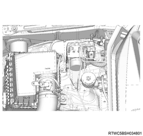
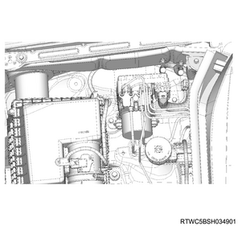

Caution
Note
1. Connect a scan tool to the DLC.
2. Turn ON the ignition switch.
3. Select diagnosis.
4. Select the chassis.
5. Select ABS/ESC.
6. Select the programming.
7. Select Module Information.
Note
8. Select Upload Vehicle Configuration Data.
Note
1. Disconnect the harness connector from the EHCU.
1. Disconnect the brake pipe from the EHCU.
Caution
Note

Note

1. Remove the EHCU from the frame.
Note